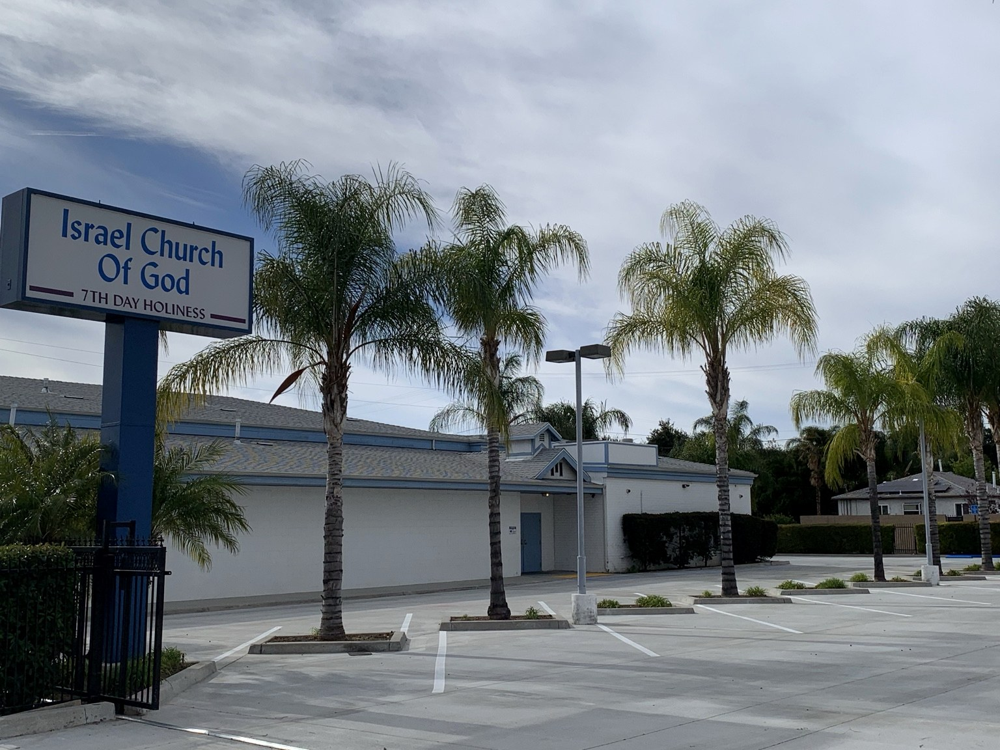

✦
Biblical Truth
We look to the Holy Scriptures as our foundation for doctrine, worship, and daily living.
Rooted in Scripture, committed to holiness, and gathered in reverence to worship God and keep His commandments.
Israel Church of God, Seventh Day Holiness has served San Bernardino since 1957. We welcome those seeking sincere worship, prayer, Scripture, and fellowship.
We look to the Holy Scriptures as our foundation for doctrine, worship, and daily living.
We gather on Saturday for Sabbath School and General Service.
Friday night prayer provides time for reverence, intercession, and spiritual renewal.
Visitors are welcome to join us as we worship God in spirit, truth, humility, and love.
We invite you to join our regular weekly services.
Daylight Saving Time
6 p.m. Standard Time
Bible-centered study and instruction.
Worship, preaching, prayer, and fellowship.
Located on North Mount Vernon in San Bernardino, our church continues a tradition of Sabbath worship, holiness, prayer, and service.
